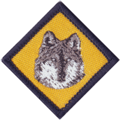

Other Cub Badges

Cub Scout Leadership Course
Cubs nominated by their leaders can attend a Cub Scout Leadership Course to improve their skills as a Sixer or Seconder.
Special Interest Badges
There are a number of specialist badges a Cub may earn. You will need to do one for your Grey Wolf Award.



Grey Wolf Award
The Grey Wolf Award (pdf) is the height of any Cub's scouting life and is usually presented at a major ceremony or event, or a significant Group ceremony. Recipients receive the Grey Wolf badge which, together with the 3 Boomerang badges, completes the large diamond shape on the Cub Scout uniform left sleeve, plus a Grey Wolf certificate and their name will be placed on the Grey Wolf honour roll in our Scout Hall. When the Cub moves into the Scout Section they are permitted to wear the Grey Wolf badge on the left sleeve of their Scout shirt for a period of 12 months or until they earn the Red level Pioneer badge.
Scout Link Badge
The Link badge (pdf) is the last you will do before you move up into Scouts.
Camper Award Badge


The Camper Award Badge depicts the total number of nights spent camping while on approved Scouting activities.
Walkabout Award Badge


The Walkabout Award Badge is earned for the total kilometres travelled under human power through a youth member's time in Scouting.